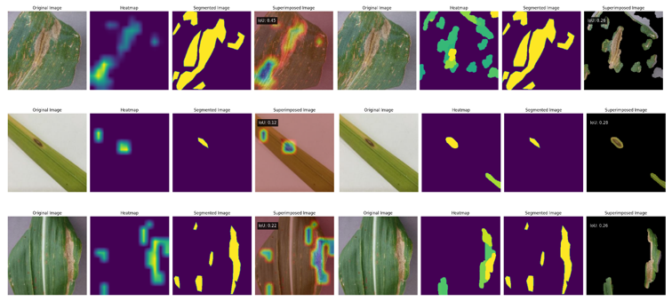

DATA SCIENCE PROJECT
AN EXPLAINABLE DEEP LEARNING MODELRole: Team leader, responsible for the main project idea development and core coding implementation.
Achievement: Honorable Mention in Scientific Research.
The entire data processing pipeline from input to output is designed to support prediction and interpretation of deep learning model results, following a rigorous and systematic workflow that includes the following steps.
Data Information
| Class | Samples |
|---|---|
| Rice | 4078 |
| Wheat | 3679 |
| Corn | 3852 |
Dataset for Training and Evaluation
I evaluated the proposed model on a dataset of three important food crops collected from multiple research papers and Kaggle. Additionally, several diseased plant images were manually annotated to support the evaluation of the Intersection over Union (IoU) metric.
- The Crop Diseases dataset contains 11,609 images across three crop species: maize, rice and wheat. It includes eight classes of diseased plants and three classes of healthy plants. Maize images were obtained from the publicly available PlantVillage dataset [3], featuring a black background and close-up shots, while the remaining crops have varied backgrounds that more closely resemble natural environments.
- The dataset was divided into training, validation and testing sets using a 60/20/20 split. The training set contains 6,965 images, while both the validation and test sets include 2,322 images each.
- For IoU evaluation, 10 images were randomly sampled from each disease class and annotated with segmentation masks highlighting the diseased regions. In total, 80 annotated images were prepared across eight disease classes without prior manual selection.
Model Performance Comparison
| Model | Parameters | F1-Score (%) |
|---|---|---|
| ResNet50 | 25.6M | 91.27 |
| VGG16 | 14.72M | 90.96 |
| EfficientNetV2B0 | 7.2M | 93.46 |
| MobileNetV2 | 3.5M | 90.23 |
| ResNet50 + CBAM | 28.09M | 93.57 |
| VGG16CBAM_bn (Our Proposed) | 15.07M | 94.75 |
Visualization results with Grad-CAM and XRAI for model explainability.
The visualization results demonstrate that both Grad-CAM and XRAI provide meaningful insights into the model's decision-making process by highlighting regions associated with plant diseases. Grad-CAM effectively captures high-level discriminative areas, allowing quick identification of where the model focuses when making predictions. However, its heatmaps are relatively coarse and may sometimes extend beyond the true diseased regions.
In contrast, XRAI generates more precise and structured segmentation maps, enabling clearer localization of infected areas on plant leaves. This finer granularity indicates stronger interpretability, helping verify that the model relies on biologically relevant features rather than background noise. Overall, while Grad-CAM is valuable for rapid visual explanations, XRAI delivers more detailed and reliable interpretations, thereby increasing trust in the model's predictions.